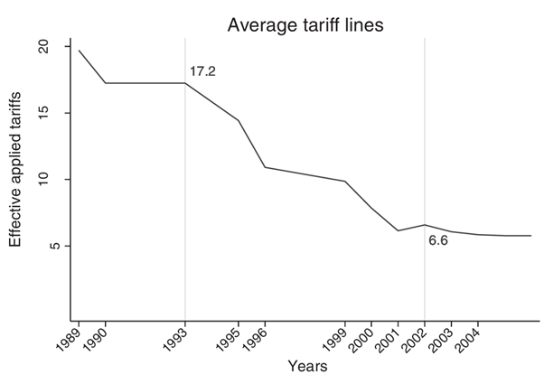

August 26, 2025
Cross-country Evidence for the benefit of trade is settled.
Evidence on within-country impact is, however, mixed.
H-O predicts gains of trade accrues to factor abundant in the country, as long as there is a perfect factor mobility.
But, within-country factor mobility is often imperfect.
One crucial element: factors are perfectly mobile between industries.
If this is not the case, then we see immobile factor like in SFM.
SFM predicts winner and losers.
The promise of free trade requires some factor of production to move from “losing” sector to “winning” sector.
However, this allocation can happen very slowly, if at all.
Short-run cost of factor allocation post trade liberalization falls disproportionately on the poor.
the speed of factor mobilization is different among different countries.
There are various reasons for imperfect factor mobility
skill mismatch
geographic immobility
social and political barriers
It is then important to investigate how trade liberalization (or restriction, for that matter) affects regional or industrial difference.
Suppose we want to estimate the effect of a local shock \((X_\ell)\) on outcome \(Y_\ell\), but \(X_\ell\) is endogenous.
Define:
\[ Z_\ell \;=\;\sum_k s_{\ell k}\,g_{k} \]
\(Z_\ell\) predicts local exposure to common shocks
Exogeneity of shares
Shares \(s_{\ell k}\) are as good as randomly assigned with respect to omitted determinants of \(Y_\ell\).
No sector-specific confounders
National growth rates \(g_k\) are uncorrelated with region-specific errors.
Relevance
Variation in \(g_k\) combined with non-zero \(s_{\ell k}\) moves \(X_\ell\).
\[ \text{Predicted Tariff Shock}_\ell = \sum_k s_{\ell k}^{\,1987}\,\Delta\log \bigl(\text{Tariff}_k\bigr) \]
Low short-run migration rate between states (for working purpose).
Impact on poverty is statistically zero in a state with flexible labor law.
Rigid labor market leads to:
more expensive to exit the market.
reluctant to expand.
\[ \text{Import Exposure}_{ct} = \sum_k s_{c k}^{\,t_0}\,\Delta\log(\text{Imports}_{k,\text{China}}) \]
| Feature | Topalova (2010) | Autor, Dorn & Hansen (2016) |
|---|---|---|
| Shock source | Tariff reductions | Chinese import surge |
| Unit of analysis | Indian districts/states | U.S. commuting zones |
| Outcome | Factor mobility, poverty | Employment, wages |
| Main instrument shares | Pre-reform industry shares | Pre-2000 employment shares |
| Interpretation | Mobility as response to policy shock | Local exposure to trade competition |

Kis-Katos and Sparrow (2015) investigate the impact of trade liberalization on local labor markets in Indonesia in 1993-2002 episode.
The Y is regional poverty levels in 259 Indonesian districts
2 tariff reduction cohorts: WTO obligations (1995) and the IMF conditionality package (1999).
\[ Ot_{kt}=\sum_{s=1}^S \left(\frac{Q_{sk,t=0}}{{Q_{k,t=0}}}\times t_{st}\right) \]
\[ It_{kt}=\sum_{s=1}^S \left(\frac{Q_{sk,t=0}}{{Q_{k,t=0}}}\times \sum_{j=1}^J \left( \frac{M_{js,1990}}{M_{s,1990}} \times t_{jt} \right)\right) \]
sector (s), districtt (k), time (t), input sector (j), labor (Q), tariff (t)
\[ \Delta y_{kt}=\alpha+\beta_1 Ot_{kt} + \beta_2 It_{kt} + \gamma \Delta X'_{kt} + I'_k \theta+\lambda_{rt}+ \Delta \epsilon_{kt} \]
where \(y\) is the district level outcome variable, \(X\) is time-varying district-level controls, \(I_k\) is the vector of district-level initial conditions, \(\lambda_{rt}\) is the region-time fixed effects.
Output tariff liberalization increases poverty, but input tariff liberalization reduces poverty by more.
So far we have seen a “share” component of bartik using employment share and output share.
The “shift” component are mostly tariff but also import growth. An ongoing study by Pane, Massie & Gupta is exploring the use of uncertainty index.
With I-O table, one can differentiate between output and input share.
Use the time-invariant “share” component prior to the shock studied.